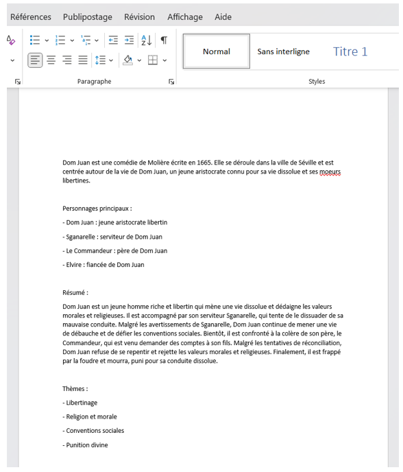

Lors de mon stage de deuxième année au sein de la société TimTek, il m'a été proposé de développer un projet basé sur
l'api de ChatGpt. Le but était de créer une page internet dans laquelle nous pouvons rentrer le nom d'un roman
afin que l'api nous en génère une fiche de lecture.
Voici donc ci-dessous la fiche de lecture générée lorsque nous rentrons le roman "Dom Juan". La fiche de lecture est donc
générée avec différentes catégories tel que les personnages principaux, le résumé ou encore les thèmes.
Si nous rentrons de nouveau "Dom Juan" dans la barre de recherche, une nouvelle fiche de lecture sera générée et sera différente
de la première.
Malheureusement, nous pouvons constater sur l'image précédente que le rendu retourné est en un seul bloc compact.
J'ai donc essayé de modifier le rendu afin d'avoir un retour à la ligne avant chaque catégories mais ça n'a pas fonctionné.
Afin de régler ce problème, j'ai donc créer un bouton permettant de copier dans le presse papier la fiche de lecture et
lorsque l'on colle le contenu dans un éditeur de texte, tout est mis en place correctement comme le montre l'image ci-dessous.

Enfin, j'ai mis en place une documentation détaillée sur la manière dont j'ai réalisé ce projet. J'ai décrit toutes
le processus par lesquelles je suis passé, les échecs et leurs solutions afin d'en arriver à ce résultat, ainsi que les
étapes à suivre afin de pouvoir lancer le code pour afficher la page internet.